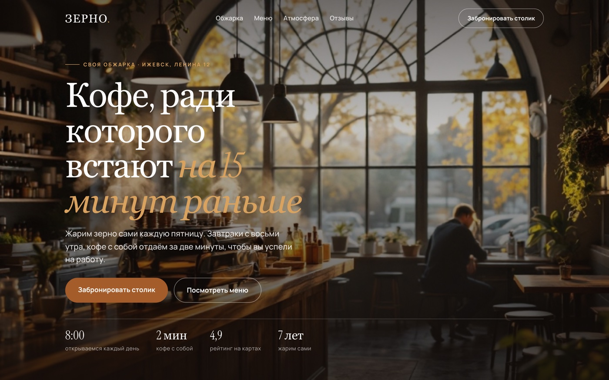
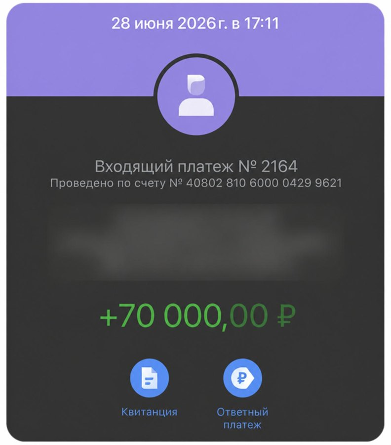

Одностраничный сайт для локального бизнеса стоит 25-35 тысяч. Собирается за вечер, кода писать не нужно.
К концу этого мануала у тебя будет своя ссылка в интернете, которую можно открыть на телефоне и показать владельцу заведения. Вот что получится, открой и полистай:
Живой пример работы
Лендинг кофейни «Зерно» → собран по шагам из этого гайда и выложен бесплатно. Такая страница для реального бизнеса стоит 25-35 тысяч.
glebastashev.github.io/ii-lessons/gaydy/demo/zerno/

Одна и та же страница на компьютере и на телефоне. Отдельную мобильную версию делать не нужно
Подготовка
Что понадобится
ChatGPT с Codex
chatgpt.com/codex
Пишет код по описанию словами. Codex это режим ChatGPT для проектов: работает в браузере, есть приложение для Mac и Windows, терминал не нужен.
Аккаунт GitHub
github.com/signup
Бесплатное место, где будет лежать сайт. Регистрация по почте, карта не нужна.
ChatGPT для картинок
chatgpt.com
Фото для шапки и блоков. Можно взять и бесплатные стоки, ссылки ниже.
Шаг 1
Открыть Codex
Зайди на chatgpt.com/codex под своим аккаунтом ChatGPT и создай новый проект. Ничего устанавливать не нужно, всё работает в браузере. Если удобнее отдельным окном, поставь приложение Codex для Mac или Windows с той же страницы.
Дальше ты просто пишешь словами, что нужно сделать, а Codex создаёт файлы и показывает результат. Кода касаться не придётся.
Репозиторий это просто папка с файлами твоего сайта, которая лежит в интернете. GitHub хранит её бесплатно и сам показывает содержимое как обычную страницу.
Шаг 2
Собрать материал по бизнесу
Страница продаёт, когда на ней конкретика этого заведения. Перед сборкой выпиши по клиенту:
1
Чем занимаются и где
Название, адрес, часы работы, телефон. Возьми из карточки на картах или из их соцсетей.
2
5-6 позиций с ценами
То, что заказывают чаще всего. Цены нужны настоящие, иначе владелец сразу увидит выдумку.
3
Три причины, почему к ним ходят
Своя обжарка, работают с 8:00, помнят по имени. Это вытаскивается из отзывов на картах за 10 минут.
4
Три отзыва
Оттуда же. Для демо помечай, что отзывы взяты с карт, ничего не выдумывай от их имени.
Шаг 3
Промпт, который собирает страницу
Скопируй целиком, подставь свои данные из шага 2 и отправь в Codex:
Промпт · лендингСобери одностраничный сайт для кофейни. Один файл index.html, стили внутри файла, без внешних библиотек.
О бизнесе:
Название: Зерно. Адрес: Ижевск, Ленина 12. Часы: 8:00-22:00. Телефон: +7 900 000-00-00.
Особенность: своя обжарка раз в неделю, кофе с собой за 2 минуты, завтраки с 8:00.
Меню: капучино 250, фильтр дня 190, раф на солёной карамели 320, сырники 340, круассан 220, завтрак дня 450.
Почему возвращаются: своя обжарка, быстрый вынос, каждый шестой кофе постоянным гостям.
Что должно быть на странице:
1. Шапка с названием, меню-якорями и кнопкой «Забронировать столик».
2. Первый экран: заголовок про выгоду для гостя, подзаголовок, две кнопки, три цифры (часы открытия, скорость выноса, рейтинг), фото справа.
3. Блок меню карточками с ценами.
4. Блок «Почему к нам возвращаются», три карточки.
5. Три отзыва со звёздами.
6. Тёмный блок контактов: адрес, часы, телефон, кнопка связи, место под карту.
7. Подвал.
Оформление: тёплая палитра, кремовый фон, коричневый акцент, скруглённые карточки, шрифт Manrope с Google Fonts. Обязательно адаптив под телефон: карточки в одну колонку, меню в шапке скрывается. Фото подключи как hero.jpg рядом с index.html.
Codex создаст файл и покажет, что получилось. Дальше правишь словами: «сделай заголовок крупнее», «поменяй акцент на зелёный», «добавь блок с доставкой». Каждая правка занимает секунды, руками код трогать не нужно.
Где брать фото
Сгенерировать в ChatGPT запросом вроде «уютная кофейня, утренний свет из окна, деревянная стойка, реалистичное фото, вертикальный кадр». Либо взять бесплатные без обязательств: Unsplash, Pexels. Положи файл рядом с index.html и назови hero.jpg.
Репозиторий это папка с файлами твоего сайта, которая лежит в интернете. GitHub хранит её бесплатно и умеет показывать содержимое как обычную страницу.
Шаг 4
Выложить сайт в интернет бесплатно
Пока страница лежит у тебя на компьютере, показать её клиенту нельзя. Нужна ссылка. Самый простой бесплатный способ, без карты и без хостинга:
2
Создай репозиторий
Кнопка New, имя латиницей (например zerno), поставь галочку Public, кнопка Create repository.
3
Загрузи файлы
На странице репозитория ссылка «uploading an existing file». Перетащи index.html и hero.jpg, нажми Commit changes. Ничего в терминале для этого не нужно.
4
Включи Pages
Settings → Pages → в блоке Branch выбери main и папку / (root) → Save. Через пару минут появится ссылка вида имя.github.io/zerno.
5
Проверь с телефона
Открой ссылку на своём телефоне. Владелец бизнеса будет смотреть именно так, и если что-то разъезжается, чинишь до показа.
Если нужен свой домен
Для клиента красивее zerno-coffee.ru вместо ссылки на github.io. Домен в зоне .ru стоит примерно 200-400 рублей в год на reg.ru или Timeweb и привязывается к тем же Pages в настройках. Эту строчку выносишь в счёт отдельно, платит клиент.
Шаг 5
Показать и получить деньги
Приходишь к владельцу с готовой ссылкой, а не с предложением «давайте я вам сделаю». Разница в ответах кратная.
Здравствуйте! Я делаю сайты для локальных заведений. Собрал страницу для вашей кофейни, чтобы показать, как это выглядит: [ссылка]. Открывается на телефоне, есть меню с ценами, отзывы и кнопка брони. Если нравится, доведу под вас: поставим ваши фото, подключим заявки в Телеграм и свой домен. Когда удобно созвониться на 5 минут?
| Работа | Цена |
|---|
| Лендинг из готового демо, правки под клиента | 25-35к |
| Плюс заявки в Телеграм владельцу | +5-10к |
| Плюс чат-бот на сайте | +15-30к |
| Домен и подключение | отдельной строкой, платит клиент |
| Сопровождение и правки | 5-15к в месяц |
Честно про сроки и порог
Первая страница займёт вечер, а не 15 минут: половина времени уйдёт на сбор материала о бизнесе и правки под телефон. Со второй-третьей выходит за пару часов, потому что промпт и структура уже есть.
Из десяти заведений, куда придёшь с готовым демо, обычно соглашается один-два. Это нормальная конверсия, закладывай её сразу и делай десять заходов, а не один.
Если не получается
Что чаще всего ломается
Страница открылась, но без картинки
Файл фото лежит не рядом с index.html или называется иначе. Имя должно совпадать буква в букву, включая расширение: hero.jpg и hero.JPG для интернета это разные файлы.
По ссылке выдаёт «404»
Либо страница ещё собирается, подожди 2-3 минуты и обнови. Либо главный файл назван не index.html, тогда переименуй его. Либо в настройках Pages не выбрана ветка main.
С телефона всё разъезжается
Напиши Codex одной фразой: «сделай страницу нормальной на телефоне шириной 390 точек, блоки в одну колонку, кнопки на всю ширину». Проверяй, сузив окно браузера до размера телефона.
Codex сделал не то, что я просил
Правь по одному блоку за раз. Вместо «переделай всё» пиши «в блоке меню поставь цену справа от названия». Так он не ломает соседние части.
Чек-лист перед показом владельцу
- Открыл ссылку со своего телефона, не только с компьютера
- Цены и адрес совпадают с настоящими, ничего не выдумано
- Все кнопки нажимаются и ведут туда, куда написано
- Фото не растянуто и грузится за пару секунд
- Название заведения написано без ошибок
- На странице есть телефон и часы работы
Разговор с клиентом
Что отвечать на частые возражения
«У нас уже есть страница в картах»
В картах человек видит рейтинг и телефон. Здесь он видит цены, ответы на частые вопросы и кнопку записи. Это разные задачи, страница снимает вопросы ещё до звонка.
«А сколько будет стоить поддержка?»
Сама страница ничего не стоит в месяц, она лежит бесплатно. Платный только домен, около 200-400 рублей в год, и оформляется он на вас. Правки считаем отдельно, когда понадобятся.
«Мне надо подумать»
Конечно. Ссылка останется у вас, покажите партнёру или администратору. Решите делать, поменяю фото на ваши и подключу домен за пару дней.
«А вы не пропадёте?»
Все файлы будут на вашем аккаунте, я только помогу их туда положить. Даже если мы перестанем работать вместе, страница останется у вас и продолжит работать.
Куда это приводит
Первую страницу почти всегда продают тому, кто рядом
Один вечер работы превращается в счёт. Дальше тот же клиент берёт бота, заявки и сопровождение, и проект вырастает в суммы вроде этой.

Оплата за проект
Так выглядит входящий платёж за собранную работу. Сделано на бесплатных инструментах, без вложений и технического образования.
Лидия, 23 года
Была официанткой · считала себя гуманитарием
Днём пары, вечером смены в общепите, деньги на уровне чаевых. Первый заказ взяла на третьей неделе, собрала страницу и бота своему же заведению. Клиента не искала, он был перед глазами каждый день. Потом её порекомендовали соседям.
3-я неделяпервый заказ
18-30кпервые работы
80-140ксейчас в месяц
Забрать бесплатный тест-драйв
5 уроков: разбираем рынок, собираем первую работу руками, проходим 7 способов найти клиента. Дошедшим до конца разбор и гайд по закрытию первого клиента.
Соберите три демо на этой неделе
Собери демо для трёх заведений рядом с домом: кофейня, барбершоп, автосервис. Промпт один, меняются только данные. Через три вечера у тебя три живые ссылки и десять поводов написать владельцам. Как искать этих владельцев и что писать, разобрано в гайде про первые заказы.